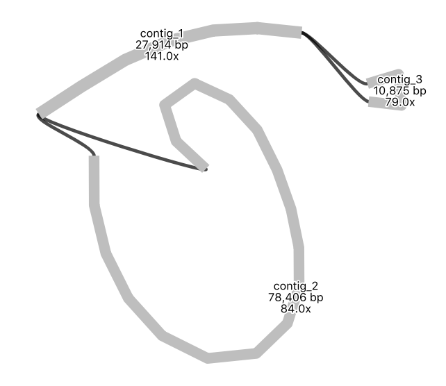

Assemble and annotate a chloroplast genome
@rbg.vic.gov.au
What is genome assembly?
- Genome assembly is the process of joining together DNA sequencing fragments into longer pieces, ideally up to chromosome lengths.
- The DNA fragments are produced by DNA sequencing machines, and are called “reads”. These are in lengths of about 150 nucleotides (base pairs), to up to a million+ nucleotides, depending on the sequencing technology used. Currently, most reads are from Illumina (short), PacBio (long) or Oxford Nanopore (long and extra-long).
- It is difficult to assemble plant genomes as they are often large (for example, 3,000,000,000 base pairs), have many repeat regions (such as transposons), and may be polyploid.
- This tutorial shows genome assembly for a smaller data set - the plant chloroplast genome - a single circular chromosome about 160,000 base pairs long.

What’s in this tutorial?
- The chloroplast genome of the sweet potato has been sequenced.
- This has produced many sequencing reads - DNA fragments.
- We will try to join these reads together to make the whole chloroplast genome sequence.
- We will use the Galaxy Australia platform (a web page) to run our analysis.
- This tutorial assumes some familiarity with Galaxy and bioinformatics - if you are new to either of these, we recommend the Galaxy Australia Training tutorials Get started, Learn key tasks, Quality control, Genome assembly, and Genome annotation, as this chloroplast genome assembly tutorial is slightly more complicated.
- You can follow all the steps, or skip any
optional steps: Get data → Read quality → Assemble→ Polish →View reads →Annotate →Repeat with new data
What’s not in this tutorial?
- The best assembly of the sweet potato chloroplast data: here, we are using a data subset.
- A full explanation of all the steps involved and all the possible variations in the workflow; answers to some of the questions.
- A workflow to assemble and annotate the chloroplast genome of any plant species: in this tutorial some steps are manual, and tools and settings may not be optimal for other plant species.
- A workflow to assemble the nuclear genome of any plant species. The process shown here is generally applicable to assembling plant nuclear genomes but there would be extra steps (and much more time) involved. For example, additional sequencing would usually be run on 10X, BioNano or HiC to produce information to link up longer nuclear chromosome pieces and to separate out the maternal and paternal haplotypes.
Get data
- Log in to Galaxy Australia and create a new history.
-
The data is from this paper: Zhou C, Duarte T, Silvestre R et al. 2018, hosted at EBI ENA.
-
Original FASTQ reads: Illumina (SRR6828568) and Nanopore (SRR6828567).
- These data sets have been highly reduced in size for this tutorial.
- In a new browser tab, go to this webpage https://zenodo.org/record/3567224
- Find the file called
sweet-potato-chloroplast-illumina-reduced.fastq - Right click on file name: select “copy link address”
- In Galaxy, go to
Get Data and thenUpload File - Click
Paste/Fetch data - A box will appear: paste in link address
- Click
Start ; clickClose - The file will now appear in the top of your history panel.
- Repeat for the Nanopore reads
sweet-potato-chloroplast-nanopore-reduced.fastq - We now have two FASTQ read files in our history.
- Click on the eye icon next to one of the FASTQ sequence files.
- View the file in the centre Galaxy panel.
Check read quality
Optional. Skip this section for a quicker tutorial - We will look at the quality of the nanopore reads.
- In the tool panel, search for Nanoplot
- For
Select multifile mode selectbatch . - For
Type of file to work on selectfastq - For
files select the nanopore FASTQ file - Click
Execute - There are five output files.
- View the
Histogram Read Length file
What summary statistics would be useful to look at?
Click for answer
This will depend on the aim of your analysis, but usually:
-
Sequencing depth (the number of reads covering each base position; also called “coverage”). Higher depth is usually better, but at very high depths it may be better to subsample the reads, as errors can swamp the assembly graph.
-
Sequencing quality (the quality score indicates probability of base call being correct). You may trim or filter reads on quality. Phred quality scores are logarithmic: phred quality 10 = 90% chance of base call being correct; phred quality 20 = 99% chance of base call being correct. More detail here.
-
Read lengths (read lengths histogram, and reads lengths vs. quality plots). Your analysis or assembly may need reads of a certain length.
Optional further steps: - Find out the quality of your reads using other tools such as fastp or FastQC.
- To visualize base quality using emoji you can also use FASTQE :smile:
- Run FASTQE for the illumina reads. In the output, look at the mean values (the middle row)
- Repeat FASTQE for the nanopore reads. In the tool settings, increase the maximum read length to 30000.
Assemble reads
Assemble: - In the tool panel, search for “Flye”.
- For
Input reads selectsweet-potato-chloroplast-nanopore-reduced.fastq - Leave other settings as default, except for
estimated genome size add160000 - Click
Execute View assembly outputs: - There are five output files.
- Note: this tool is heuristic; your results may differ slightly from the results here, and if repeated.
- View the
log file and scroll to the end. - How many contigs (fragments) were assembled?
- What is the length of the assembly?
- View the
assembly_info file. - What are the contig names and lengths?
-
The assembly sequence is in the
consensus . Re-name thisflye-assembly.fasta -
View the assembly: - In the tool panel, search for “Bandage”.
- Run “Bandage Info” on the Flye output file
Graphical Fragment Assembly (not the “assembly_graph” file) with the default settings. - View the ouput file: how many nodes and edges are there?
- Run “Bandage Image” on the Flye output file
Graphical Fragment Assembly , clicking “Yes” to display “Node length labels”. -
(Note that some text may be cut off this image due to a bug, under investigation).
-
Your assembly graph may look like this:

What is your interpretation of this assembly graph?
Click for answer
One interpretation is that this represents the typical circular chloroplast structure: There is a long single-copy region (the node of around 78,000 bp), connected to the inverted repeat (a node of around 28,000 bp), connected to the short single-copy region (of around 11,000 bp). In the graph, each end loop is a single-copy region (either long or short) and the centre bar is the collapsed inverted repeat which should have about twice the sequencing depth.
Optional further steps: - Repeat the Flye assembly with different parameters, and/or a filtered read set.
- Try an alternative assembly tool, such as Canu or Unicycler.
Polish assembly
- Short illumina reads are more accurate the nanopore reads. We will use them to correct errors in the nanopore assembly.
Map short reads to the assembly: - In the tool panel, search for “bwa mem”, and click on “Map with BWA-MEM”
- For
Will you select a reference genome from your history selectUse a genome from history - For
Use the following dataset as the reference sequence selectflye-assembly.fasta - For
Algorithm for constructing the BWT index selectAuto. Let BWA decide - For
Single or Paired-end reads selectSingle - For
Select fastq dataset selectsweet-potato-illumina-reduced.fastq - For
Set read groups information? selectDo not set - For
Select analysis mode select1. Simple Illumina mode - Click
Execute - This maps the short reads to the assembly, and creates an alignment file.
- Re-name this file
illumina.bam Polish the assembly: - In the tool panel, search for “pilon”, and click on “pilon”
- For
Source for reference genome used for BAM alignments selectUse a genome from history - For
Select a reference genome selectflye-assembly.fasta - For
Type automatically determined by pilon clickYes - For
Input BAM file selectillumina.bam - For
Variant calling mode selectNo - For
Create changes file selectYes - Click
Execute -
This compares the short reads to the assembly, and creates a polished (corrected) assembly file.
-
There are two outputs: a
fasta file and achanges file. - What is in the
changes file? - Re-name the fasta output file
polished-assembly.fasta - Find and run the tool called “Fasta statistics” on the original flye assembly and the polished version.
How does the short-read Pilon-polished assembly compare to the unpolished
Click for answer
This will depend on the settings, but as an example: your polished assembly might be about 10-15 Kbp longer. Nanopore reads can have homopolymer deletions - a run of AAAA may be interpreted as AAA - so the more accurate illumina reads may correct these parts of the long-read assembly. In the
Optional further steps: - Run a second round (or more) of Pilon polishing. Keep track of file naming; you will need to generate a new bam file first before each round of Pilon.
- Run an alternative polishing tool, such as Racon. This uses the long reads themselves to correct the long-read (Flye) assembly. It would be better to run this tool on the Flye assembly before running Pilon, rather than after Pilon.
View reads
Optional. Skip this entire section for a quicker tutorial - We will look at the original sequencing reads mapped to the genome assembly.
- In a new browser tab, go to this webpage https://zenodo.org/record/3567224
- See the two files with the “-tiny” in their file name. These are very cut-down files of sequencing reads.
- Upload these files to Galaxy.
Map the reads: - Map the Illumina reads (the new “tiny” dataset) to the
polished-assembly.fasta , the same way we did before, using bwa mem. - This creates one output file: re-name it
illumina-tiny.bam - Map the Nanopore reads (the new “tiny” dataset) to the
polished-assembly.fasta . The settings will be the same, exceptSelect analysis mode should beNanopore . - This creates one output file: re-name it
nanopore-tiny.bam Create a visualization of the mapped reads: - In the tool panel, search for “JBrowse”, and click on “JBrowse genome browser”
- This tool creates a visualization of our genome assembly with some of the original sequencing reads mapped to it.
- For
Reference genome to display selectUse a genome from history - For
Select the reference genome selectpolished-assembly.fasta - For
Produce Standalone Instance selectYes - For
Genetic Code select11. The Bacterial, Archaeal and Plant Plastid Code - For
JBrowse-in-Galaxy Action selectNew JBrowse instance Insert Track Group - Now we’ll set up two tracks (or rows) to display underneath the assembled genome.
- One track will be the nanopore reads; one track will be the illumina reads.
Insert Annotation Track . This is our first track, or row, to be displayed under the reference genome.- For
Track Type selectBAM pileups - For
BAM track data selectnanopore-tiny.bam . - For
Autogenerate SNP track clickNo . - Leave the other track features as default.
Insert Annotation Track . This is our second track, or row, to be displayed under the reference genome.- For
Track Type selectBAM pileups - For
BAM track data selectillumina-tiny.bam . - For
Autogenerate SNP track clickNo . - Leave the other track features as default.
- Click
Execute - This may take a few minutes. There is one output file: re-name:
assembly-and-reads View the JBrowse file: - Click on the eye icon to view. (For more room, collapse Galaxy side menus with corner < > signs).
- Make sure the bam files are ticked in the left hand panel.
-
Choose a contig in the drop down menu. Zoom in and out with + and - buttons.
-
Reference and reads: zoomed-out view

What are some reasons that the read coverage may vary across the reference genome?
Click for answer
There may be lots of reasons. Some possibilities:
1/ In areas of high read coverage: this region may be a collapsed repeat.
2/ In areas of low or no coverage: this region may be difficult to sequence; or, this region may be a misassembly.
- Reference and reads: zoomed-in view

What are the differences between the nanopore and the illumina reads?
Click for answer
Nanopore reads are longer and have a higher error rate.
Annotate genome
-
Optional. Skip this section for a quicker tutorial -
We can now annotate our assembled genome with information about genomic features.
Use a web-based tool to annotate: - Download
polished.fasta to your computer (click on the file in your history; then click on the disk icon). - In a new broswer tab, go to Chlorobox where we will use the GeSeq tool to annotate our sequence.
- For
FASTA file to annotate click+ Upload File and selectpolished.fasta . - Select
Circular (it will then consider annotations that span ends) andPlastid . - For
Options tickGenerate codon-based alignments - For
BLAT search leave defaults. - For
HMMER profile search tickEmbryophta .
- For
ARAGORN tick the box and leave defaults.
-
For
BLAT Reference Sequences tickMPI-MP chloroplast refrences -
For
Actions , tick to accept the Disclaimer andSubmit . - A
Results box will appear underneath and fill with files as they are created. -
When job status is
finished , click on each of theOGDRAW files to view the annotations. -
Example of an annotated contig:

- For the longer contig, click on its
GFF3 file, then clickDownload . (We will look at this contig only.)
View the annotations in Galaxy: -
In Galaxy, in the tool panel,
Get Data :Upload File :Choose local file GFF3 file :Start :Close -
Make a JBrowse file to view the annotations (the GFF3 file) under the assembly (the polished.fasta file).
-
In the tool panel, search for “JBrowse”, and click on “JBrowse genome browser”
- For
Reference genome to display selectUse a genome from history - For
Select the reference genome selectpolished-assembly.fasta - For
Produce Standalone Instance selectYes - For
Genetic Code select11. The Bacterial, Archaeal and Plant Plastid Code - For
JBrowse-in-Galaxy Action selectNew JBrowse instance Insert Track Group Insert Annotation Track .- For
Track Type selectGFF/GFF3/BED/GBK Features - For
GFF/GFF3/BED Track Data select theGFF3 annotation file. - Click
Execute - This may take a few minutes. There is one output file: re-name:
view-annotations - Click on the eye icon to view.
- Select the right contig to view, in the drop down box.
- Zoom out (with the minus button) until annotations are visible.
-
Your annotations may look like this:

-
Zoom in (with the plus button) to see annotation details. Click on an annotation to see its sequence and source (e.g. the tool that predicted it).

Why might there be several annotations over the same genome region?
Click for answer
One reason is that these are predictions from different tools - such as BLAT or HMMER.
Repeat with new data
-
Extension exercise -
We can assemble another chloroplast genome using sequence data from a different plant species: the snow gum, Eucalyptus pauciflora.
-
This data is from Wang W, Schalamun M, Morales-Suarez A et al. 2018. It is a subset of the original FASTQ read files (Illumina - SRR7153063, Nanopore - SRR7153095).
-
Get data: at this Zenodo link, then upload to Galaxy. -
Check reads: RunNanopolot on the nanopore reads.
-
Assemble: UseFlye to assemble the nanopore reads, then getFasta statistics Note: this may take several hours. -
Polish assembly: UsePilon to polish the assembly with short Illumina reads. Note: Don’t forget to map these Illumina reads to the assembly first using bwa-mem, then use the resultingbam file as input to Pilon. -
Annotate: Use the GeSeq tool at Chlorobox. Note: First download thepolished.fasta file, then upload to Chlorobox. After annotation, download theGFF3 file from Chlorobox, then upload to Galaxy. -
View annotations: UseJBrowse to view the assembled, annotated genome. Note: JBrowse uses thepolished.fasta file and the annotationsGFF3 file.
Tutorial summary
What were the main steps in this tutorial?
Click for answer
What common file types were used or created?
Click for answer
What’s next?
- What can you do with an assembled genome? Common tasks are:
- Call (find) variants (SNPs) by comparing sequencing reads to the reference (the assembled genome).
- Find larger structural variants (SVs) by comparing multiple genomes.
- Use multiple genomes (or a set of genes within) for phylogenetic inference.
- Compare the genes found in one genome with another.
- See more tutorials in the left-hand panel or in our list of other bioinformatics tutorials.